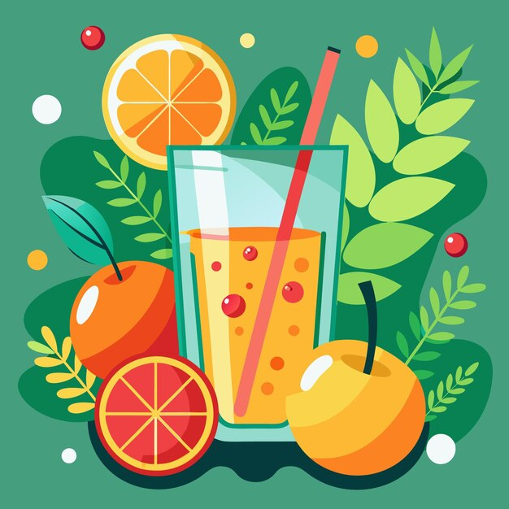
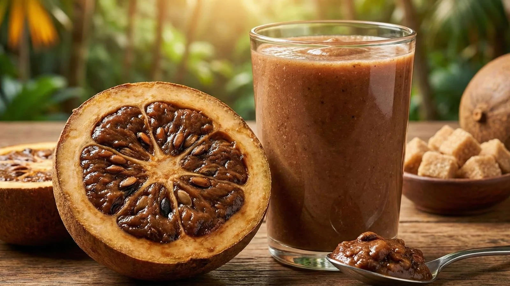

¿Quiénes somos?
Somos una microempresa creada a partir de diciembre de 2019 debido a la pandemia.
Nos especializamos en todo de tipo de jugos naturales bebidas y comidas rapidas orientadas
principalmente a ciclistas
y gente que hace deporte.
Nuestros productos insignia

Jugo de naranja
La especialidad de la casa,
creado a partir de la refrescante
naranja tangelo y con las
posibilidades de complementarlo
con diversas vitaminas
y mezclas de otros jugos.

Salpicón
El salpicon es ,
una mezcla de sabores y frutas
donde el sabor de la
papaya el rico melon
y el sabroso mango
te volvera adicto a su sabor.

Jugo de borojó
El borojo ,
una fruta de la que
poco se habla.
La cual tiene muchas ventajas
bajo la manga
y te repondra la energia de inmediato.